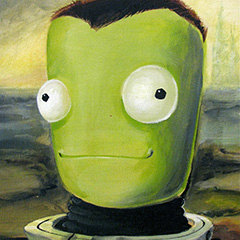

About Me
 I am a Full Stack developer from Minneapolis. I've also been doing web development as a freelancer since 2008. In 2007, I won FBLA's Web Development competition for the state of Florida.
I've been fascinated with computers for as long as I can remember. My first exposure to development happened when I was 8 or 9 - my parents gave me their old computer, a Windows 95 machine, because they had just bought a new one. It did not have a connection to the Internet, so I just played with everything that was already installed. One of the programs that was included was Microsoft FrontPage - a visual developing environment that required no programming ability. I would drag elements on to a page, then look at the source code to see what had changed. I learned HTML and CSS that way. I learned JavaScript mostly by reading the source code from Temporary Internet Files. Most of my practices were bad, but over the years I've caught and corrected many of them.
Since those first years, I've learned a lot of other, non-web languages, but I've never forgotten my first love: web development. Hire me as your next developer!